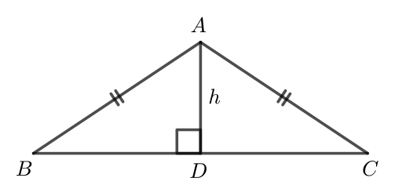
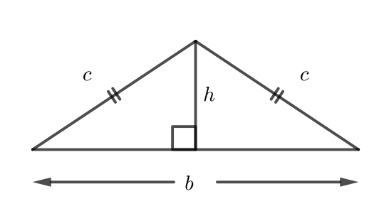

Problem of the Week
Problem D and Solution
Different Lengths
Problem
\(\triangle ABC\) is isosceles with \(AB=AC\). All three side lengths of \(\triangle ABC\) and also altitude \(AD\) are positive integers.
If the area of \(\triangle ABC\) is 60 cm\(^2\), determine all possible perimeters of \(\triangle ABC\).

Note: You may use the fact that the altitude of an isosceles triangle drawn to the unequal side bisects the unequal side.
Solution
Let the base of \(\triangle ABC\) (which is \(BC\)) have length \(b\) and the equal sides (\(AB\) and \(AC\)) have length \(c\), as shown in the diagram.

The area of \(\triangle ABC\) is \(\dfrac{\text{base} \times \text{height}}{2}=\dfrac{bh}{2}\).
Since this area is given to be 60 cm\(^2\), we have \(\dfrac{bh}{2}=60\) or \(bh = 120\).
We are given that \(b\) and \(h\) are positive integers. We will consider the positive factors of 120 to generate all possibilities for \(b\) and \(h\). Since the altitude \(AD\) bisects \(BC\), \(\triangle ABC\) is composed of two congruent right-angled triangles, each with side lengths \(c, h\), and \(\frac{b}{2}\). We will use the Pythagorean Theorem in one of these right-angled triangles to generate a value of \(c\) for each possibility.
| \(h\) | \(b\) | \(\frac{b}{2}\) | \(c^2=h^2+(\frac{b}{2})^2\) | Valid? |
|---|---|---|---|---|
| 1 | 120 | 60 | 3601 | No, \(c\) is not an integer |
| 2 | 60 | 30 | 904 | No, \(c\) is not an integer |
| 3 | 40 | 20 | 409 | No, \(c\) is not an integer |
| 4 | 30 | 15 | 241 | No, \(c\) is not an integer |
| 5 | 24 | 12 | 169 | Yes, \(c=13\) |
| 6 | 20 | 10 | 136 | No, \(c\) is not an integer |
| 8 | 15 | 7.5 | 120.25 | No, \(c\) is not an integer |
| 10 | 12 | 6 | 136 | No, \(c\) is not an integer |
| 12 | 10 | 5 | 169 | Yes, \(c=13\) |
| 15 | 8 | 4 | 241 | No, \(c\) is not an integer |
| 20 | 6 | 3 | 409 | No, \(c\) is not an integer |
| 24 | 5 | 2.5 | 582.25 | No, \(c\) is not an integer |
| 30 | 4 | 2 | 904 | No, \(c\) is not an integer |
| 40 | 3 | 1.5 | 1602.25 | No, \(c\) is not an integer |
| 60 | 2 | 1 | 3601 | No, \(c\) is not an integer |
| 120 | 1 | 0.5 | 14 400.25 | No, \(c\) is not an integer |
We see that there are two solutions for \((h,b,c)\). They are \((5,24,13)\) and \((12,10,13)\).
The side lengths of the corresponding triangles are 24, 13, and 13 and 10, 13, and 13. Therefore, the perimeter of \(\triangle ABC\) is either 50 cm or 36 cm.